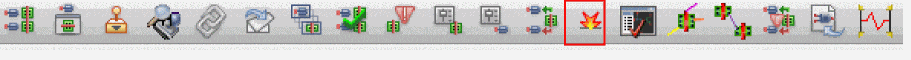
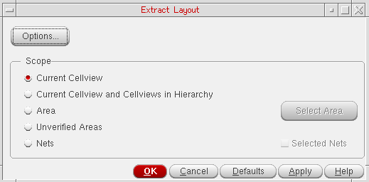
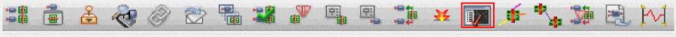

Checking Shorts, Incomplete Nets, and Illegal Overlaps
Use the Annotation Browser assistant to check the number of incomplete nets, shorts, and illegal overlaps in your design. To locate the shorts in a design, use the Layout XL Short Locator available under the Connectivity menu.
The command relies on connectivity extractor markers. If you have deleted these markers, you must re-extract your design before checking for shorts and opens.
To check the number of shorts, opens, and illegal overlap markers:
-
Extract the design, if required, by doing one of the following:
- From the layout window menu bar, choose Connectivity – Update – Extract Layout.
-
Click the Extract Layout button on the Layout XL toolbar.
 -
Click the Annotation Browser button on the Layout XL toolbar.
The Connectivity tab of the Annotation Browser is displayed.
The tab label indicates the total number of connectivity violations in the design. These are separated into different categories for Illegal Layer Overlaps, Incomplete Nets, and Shorts in the browser pane. - Click the Set Highlight State column for the entry whose flight line you want to see.
- Click the Set Highlight Color column to set the color used to draw the corresponding marker in the design window. Choose cycle to let Layout XL select the color automatically by cycling through a predefined list.
-
Click the Set Marker Check State column to set the Checked state of the corresponding marker. When a marker is set to Checked, you can use the Hide Checked Markers button to hide it in the Annotation Browser without deleting the marker from the design window.
Clicking these columns next to the Incomplete Nets category shows all the incomplete net flight lines in the design.
Related Topics
Connectivity Extraction Use Model
Locating Shorts Using Short Locator
Locating the Shapes Causing the Short
Locating Short with Large Number of Common Shapes
Return to top